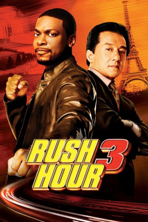
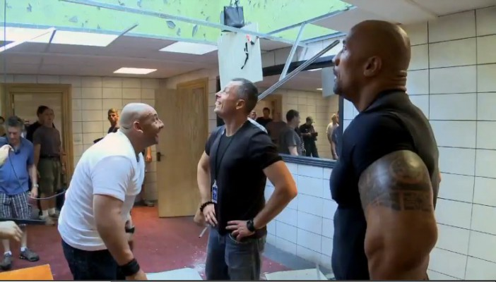

#1996 Rush Hour 3
 
 IMDB-Wertung: 6.2 / 10
IMDB-Wertung: 6.2 / 10  Metascore: 44
Metascore: 44 
Die unfreiwilligen Partner Carter und Lee mischen diesmal die französische Hauptstadt auf, um einer brisanten Verschwörung der Triaden auf die Spur zu kommen. Denn die Killer dieses mächtigsten Verbrechersyndikats der Welt schießen den Botschafter Han nieder, bevor der vor dem internationalen Strafgerichtshof den obersten Triaden-Boss identifizieren kann. Inspector Lee war persönlich für den Schutz des Botschafters verantwortlich – jetzt will er persönlich abrechnen. Aber wie? Weder Carter noch Lee waren jemals in Paris, sie können “voilà” nicht von “bonjour” unterscheiden – im Grunde wissen sie nicht einmal, was sie an der Seine eigentlich suchen. Klar scheint nur zu sein, dass die schöne Geneviève eine Schlüsselrolle spielt. Und in den Fall verwickelt ist auch Lees einstiger Jugendfreund, der skrupellose Kenji...
Jahr: 2007
Dauer: 91 Minuten
FSK: 12
Land: USA Studio: New Line CinemaTonspuren: DTS - ,
Untertitel:
Auflösung: 1080p (1920x800) Größe: 5867 MB
Genre: Action, Thriller, Komödie, Krimi
Regisseur:  Brett Ratner
Brett Ratner
Drehbuch: Jeff Nathanson, Ross LaManna
Soundtrack: Lalo Schifrin
Darsteller:
 Chris Tucker als Carter
Chris Tucker als Carter Jackie Chan als Lee
Jackie Chan als Lee Max von Sydow als Reynard
Max von Sydow als Reynard Hiroyuki Sanada als Kenji
Hiroyuki Sanada als Kenji Yvan Attal als George
Yvan Attal als George Yûki Kudô als Dragon Lady
Yûki Kudô als Dragon Lady- Noémie Lenoir als Genevieve
 Jingchu Zhang als Soo Yung
Jingchu Zhang als Soo Yung Tzi Ma als Ambassador Han
Tzi Ma als Ambassador Han Dana Ivey als Sister Agnes
Dana Ivey als Sister Agnes- Mia Tyler als Marsha
- David Niven Jr. als British Foreign Minister
- Oanh Nguyen als Mi
-  Olivier Schneider als French Cop
 Philippe Bergeron als Baccarat Dealer
Philippe Bergeron als Baccarat Dealer- Daniel Yabut als Croupier
- Frank Bruynbroek als Bartender
- Ann Christine als Dressing Room Girl
- Heather Mostofizadeh als Dressing Room Girl
- Jasmine Dustin als Dressing Room Girl
- Francesca Cecil als Dressing Room Girl
- Julie Depardieu als George's Wife
- Marc Hoang als Eiffel Tower Lookout
- Catherine Ferrino als Follies Dancer
- Rachael Markarian als Follies Dancer
- Victoria Gracie als Follies Dancer
- Kristin Quinn als Gendarmes Dancer
 Don Abernathy als Dignitary / Limo Driver / Protester , uncredited
Don Abernathy als Dignitary / Limo Driver / Protester , uncredited- Gia Bay als Dressing Room Girl , uncredited
- Flynn Beck als French Saloon Girl , uncredited
 Hélène Cardona als Stewardess , uncredited
Hélène Cardona als Stewardess , uncredited Darryl Chan als Reynard Triad Gangster , uncredited
Darryl Chan als Reynard Triad Gangster , uncredited George Cheung als Reynard Triad Gangster , uncredited
George Cheung als Reynard Triad Gangster , uncredited- Alexandra Choi als U.N. Woman , uncredited
 Arnold Chon als Motorcycle Triad , uncredited
Arnold Chon als Motorcycle Triad , uncredited- Libby Clearfield als Follies patron , uncredited
- Rich Cohen als Baccarat Dealer , uncredited
- Arnaud Collery als Casino Scene Playboy , uncredited
- Elaine Anne Furst als US Delegate , uncredited
 Paul Grace als Police Officer , uncredited
Paul Grace als Police Officer , uncredited- Lon Haber als French Taxi Driver , uncredited
 Philip Baker Hall als Captain William Diel , uncredited
Philip Baker Hall als Captain William Diel , uncredited- Alicia Hannah als Cocktail Waitress , uncredited
- Richard Hotson als ICU Cop #1 , uncredited
 Alexander Kanellakos als WCC Security Officer Wolfe , uncredited
Alexander Kanellakos als WCC Security Officer Wolfe , uncredited- Kainoa Kilcher als Kung Fu Student , uncredited
- Xihuaru Kilcher als Kung fu Student , uncredited
 James Lew als French Assassin #1 , uncredited
James Lew als French Assassin #1 , uncredited- Jill Maddrell als Casino Guest , uncredited
- Isabelle Marlowe als Casino Guest , uncredited
Datei: X:\3-Trilogie(N-Z)\Rush Hour\Rush Hour 3 (2007, FSK12, 1920x800).mkv seit 19.09.2015
Festplatte: HD Collection-3(N-Z)-6(A-Z)
 Alle Filme aus Gruppe '3-Trilogie(N-Z)\Rush Hour'
Alle Filme aus Gruppe '3-Trilogie(N-Z)\Rush Hour'